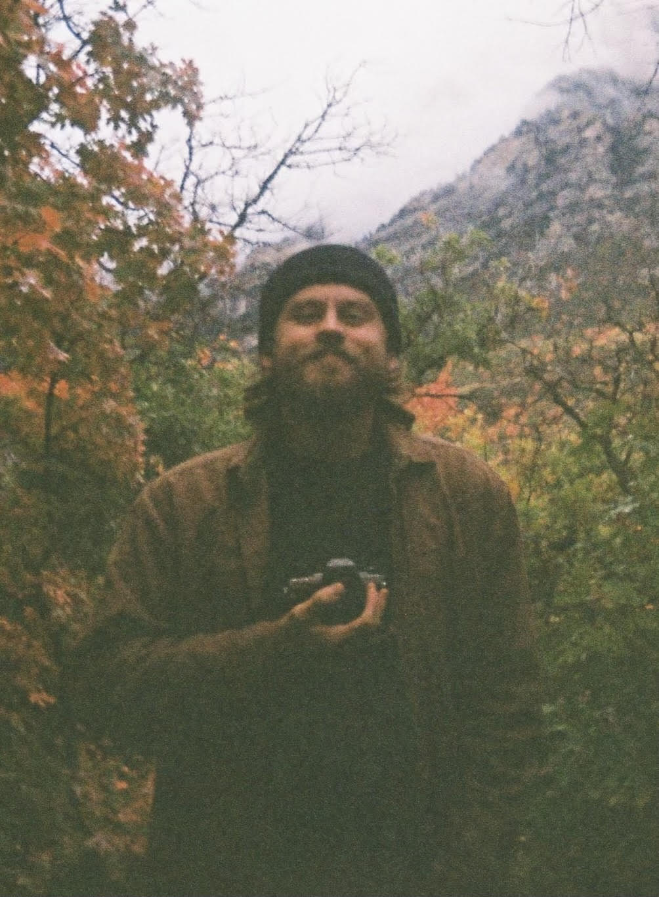

Hello, I am Spencer Jeppson, a prospective DAPR student at UVU. I have been attending UVU for 3 years with the goal of applying for the audio program and completion of a bachelor's degree in digital audio. I am currently employed at The Covey Center for the Arts as an Audio Engineer in their 680 seat theatre. I build and repair audio effects and hardware as Haunt Audio
and intend to further my progression in hardware and circuit design and implementation, with goals to design and hand build small batch boutique audio effects. I am currently working towards designing and releasing self produced effects on custom ordered PCB’s, handbuilt in small batches. I am an active participant in the local music scene, playing bass in a couple bands. Upon graduation, I intend to seek employment in a studio setting, working with musicians to engineer and produce music. My long term career goals include a lifelong commitment to audio immersion and learning. I will continue creating, building, modifying, and repairing audio gear as long as I’m able to hold a soldering iron. I plan to continue Haunt Audio and design and release a line of handbuilt pedals that is focused on putting high quality and unique effects into the hands of musicians who are pushing boundaries of what music sounds like. I admire and look up to producers in the punk / hardcore scene such as Will Yip, Jon Markson, Seth Henderson and Brett Romnes. I intend to work towards a career in producing music in this specific sphere, working with bands in this genre and scene.